Eurosystem staff macroeconomic projections for the euro area, June 2022
Russia’s war against Ukraine has severely hit confidence, caused energy and food prices to soar further and, together with pandemic-related disruptions in China, compounded existing supply chain pressures. These factors pose strong headwinds for the economic recovery in the euro area and come at the same time as a relaxation of pandemic-related restrictions, which is providing a strong boost to the services sector.[1] The baseline projections are built on the assumptions that the current sanctions against Russia will remain in place over the full projection horizon (including the EU’s oil embargo); the intense phase of the war will continue until the end of this year with no further escalation; disruptions to energy supplies will not lead to rationing in euro area countries; and supply bottlenecks will gradually be resolved by the end of 2023. All this implies much weaker (though still positive) near-term growth prospects, with headwinds fading after 2022 and growth in the medium term standing somewhat above historical average rates, reflecting a gradual recovery from the economic fallout from the pandemic, as well as the fading of the negative impacts of the war amid overall robust labour markets. Euro area real GDP is expected to grow by 2.8% on average in 2022 (of which 2.0 percentage points relates to carry-over from 2021) and by 2.1% in both 2023 and 2024. Compared with the March 2022 ECB staff projections, the outlook for growth has been revised down by 0.9 percentage points for 2022 and by 0.7 percentage points for 2023, mainly owing to the economic impacts of the war in Ukraine, while growth in 2024 has been revised up by 0.5 percentage points, reflecting a rebound in activity as headwinds fade.
Following the surge in inflation in early 2022, the outlook is for higher and more persistent inflation. Headline HICP inflation is expected to remain very high for most of 2022, averaging 6.8%[2], before abating gradually from 2023 and converging to the ECB’s inflation target in the second half of 2024. Price pressures will remain exceptionally high in the near term owing to elevated oil and gas prices, and increases in food commodity prices which have been strongly affected by the war in Ukraine, as well as the effects of the reopening of the economy and global supply shortages. The expected decline in inflation to 3.5% in 2023 and 2.1% in 2024 mainly reflects an assumed moderation in energy and food commodity prices in the absence of additional shocks, as embedded in futures prices. In addition, the ongoing normalisation of monetary policy, to the extent that it is reflected in higher interest rate assumptions (in line with market expectations) will contribute to the moderation in inflation, with the usual transmission lags. HICP inflation excluding energy and food will remain very elevated until the end of 2022, but thereafter it is expected to decline as the upward pressures from the reopening of the economy subside and as supply bottlenecks and energy input cost pressures ease. The ongoing economic recovery, tightening labour markets and some effects from compensation for higher inflation on wages – which are expected to grow at rates well above historical averages – imply elevated underlying inflation until the end of the horizon, although the baseline assumes longer-term inflation expectations will remain well anchored. Compared with the March 2022 ECB staff projections, inflation has been revised up substantially. This reflects recent data surprises; higher energy and food commodity prices; more persistent upward pressures from supply disruptions; stronger wage growth; and the depreciation of the euro exchange rate. These effects more than offset the downward impact of the increase in the interest rate assumptions and the weaker growth outlook.
Growth and inflation projections for the euro area
(annual percentage changes)
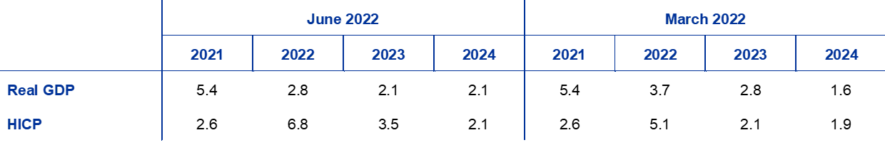
Notes: Real GDP figures refer to seasonally and working day-adjusted data. Historical data may differ from the latest Eurostat publications due to data releases after the cut-off date for the projections.
Given the high uncertainty surrounding the outlook, the projections are complemented by a downside scenario that reflects the possibility of a severe disruption to European energy supplies, leading to further spikes in energy prices and production cuts. In this scenario, inflation averages 8.0% in 2022 and 6.4% in 2023, before dropping below the baseline projection to 1.9% in 2024. This profile reflects a strong rise in commodity prices until late 2022 and a significant decline thereafter. In this scenario real GDP grows by only 1.3% in 2022, contracts by 1.7% in 2023 and, despite recovering in 2024 when it grows by 3%, remains significantly below the baseline level throughout the projection horizon. This report also contains sensitivity analyses relating to key elements of the downside scenario and to the impact of a higher degree of wage indexation and alternative energy price paths on the baseline projections.
1 Real economy
Real GDP growth increased to 0.6% in the first quarter of 2022, despite pandemic restrictions, ongoing supply chain pressures, a spike in energy and food prices, and – at the end of the quarter – uncertainty owing to the war in Ukraine. This outcome was above the March 2022 ECB staff projections (0.2%), but was strongly affected by volatility owing to the activities of multinational companies based in Ireland and therefore may overstate the strength of underlying domestic activity in the euro area.[3] Private consumption contracted further in the first quarter as a result of tighter pandemic-related restrictions at the turn of the year – although these restrictions started to ease significantly in March – coupled with an inflation-induced drop in real disposable income. In contrast, net trade and inventories provided positive contributions to growth in the first quarter of 2022.
Chart 1
Euro area real GDP growth
(quarter-on-quarter percentage changes, seasonally and working day-adjusted quarterly data)
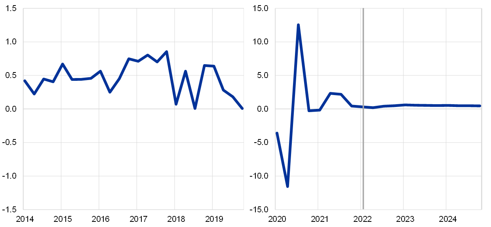
Notes: Historical data may differ from the latest Eurostat publications due to data releases after the cut-off date for the projections (see footnote 3). The vertical line indicates the start of the projection horizon.
Real GDP growth is expected to be subdued in the second quarter of 2022 (Chart 1). The factors that are constraining growth are high energy and food prices, persistent supply bottlenecks and high uncertainty. At the same time, the phasing-out of pandemic-related restrictions in the context of a large accumulated stock of excess savings provides support to growth. Conjunctural data and survey indicators suggest that the effects of the war in Ukraine have started to weigh on household consumption of goods. However, the rebound in the consumption of contact-intensive services should still translate into rising private consumption in the second quarter. Overall, these factors have led to significant downward revisions to real GDP growth compared with the March 2022 projections, to 0.2% in the second quarter of 2022 (-0.8 percentage points) and to 0.4% in the third quarter (-0.6 percentage points).
Beyond the near term, growth is expected to gradually pick up as the headwinds fade, although the level of GDP is set to remain notably lower throughout the horizon than was foreseen in previous staff projections. The expected improvement is based on the assumptions that the intense phase of the war in Ukraine is over by the end of 2022; the economic impact of the pandemic diminishes further and consumption patterns normalise; supply bottlenecks unwind by the end of 2023; and export growth is supported by improved price competitiveness against key trading partners, such as the United States, and by a recovery in foreign demand. Higher inflation, compounded by the effects of the war in Ukraine on commodity prices, is expected to lead to a decline in real disposable income and to reduce the real value of the large stock of savings built up during the pandemic, and thus to dampen consumption in the short term. Over the medium term, declining inflation rates should gradually allow real income to grow again and support consumption. The negative impacts of weaker confidence and increased uncertainty, which foster precautionary savings in the short term, should also fade. After the sizeable support for activity provided by governments throughout the COVID-19 crisis in 2020-21, as well as higher expected investment in 2022 funded by the Next Generation EU (NGEU) programme and the more recent support related to high energy prices and the war in Ukraine, fiscal policy is expected to have a negative impact on growth in 2023, as some of these measures are withdrawn. The fiscal position is expected to remain looser at the end of the projection horizon compared with the pre-pandemic period, with a positive effect on the level of GDP. Overall, given the downgraded short-term outlook and only a partial rebound expected in the medium term, the level of real GDP is projected to remain well below the path foreseen in the March 2022 projections over the horizon (Chart 2).
Chart 2
Euro area real GDP
(chain-linked volumes, Q4 2019 = 100)
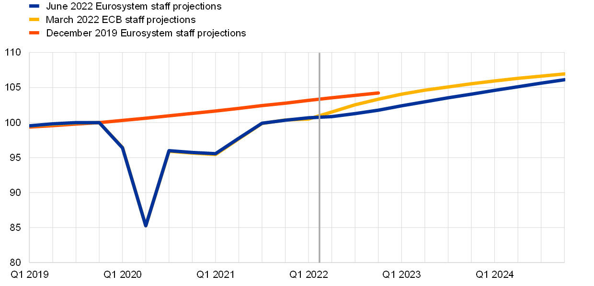
Notes: Data are seasonally and working day-adjusted. Historical data may differ from the latest Eurostat publications due to data releases after the cut-off date for the projections. The vertical line indicates the start of the current projection horizon.
The outlook for euro area activity is surrounded by a high degree of uncertainty, related to the development of the war in Ukraine. One key risk relates to the possibility of a severe disruption to European energy supplies, leading to further spikes in energy prices and production cuts. A downside scenario, reflecting the impact of these and other risks related to the war in Ukraine on activity and price developments, is described in Box 3.
Table 1
Macroeconomic projections for the euro area
(annual percentage changes, unless otherwise indicated)
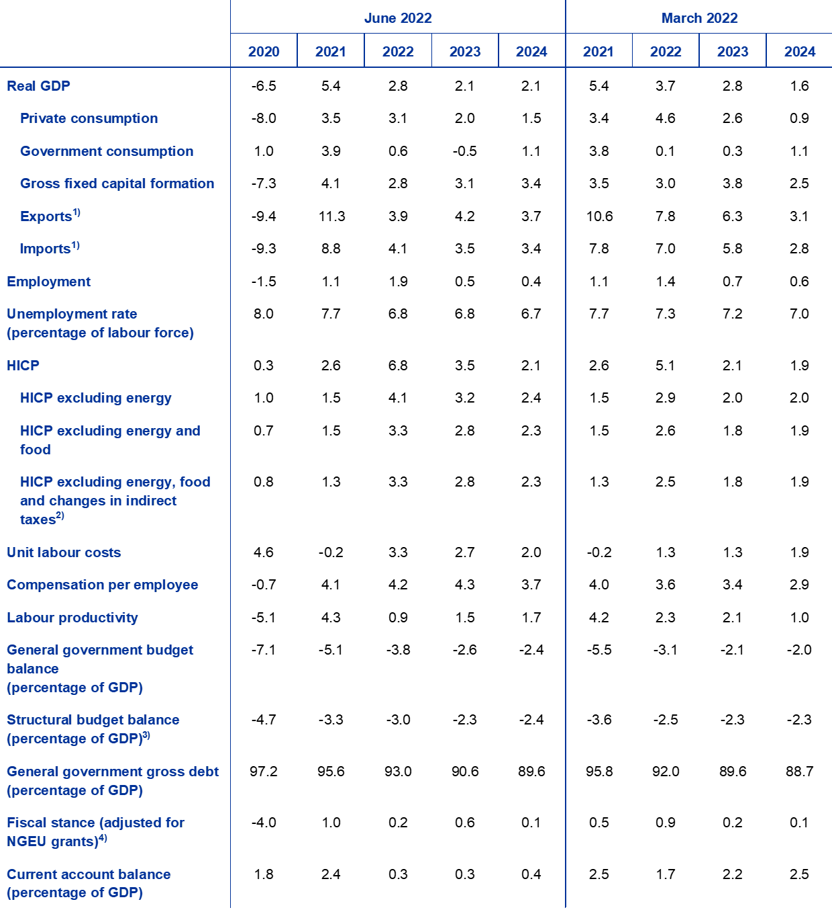
Notes: Real GDP and components, unit labour costs, compensation per employee and labour productivity refer to seasonally and working day-adjusted data. Historical data may differ from the latest Eurostat publications due to data releases after the cut-off date for the projections.
1) This includes intra-euro area trade.
2) The sub-index is based on estimates of actual impacts of indirect taxes. This may differ from Eurostat data, which assume a full and immediate pass-through of indirect tax impacts to the HICP.
3) Calculated as the government balance net of transitory effects of the economic cycle and measures classified under the European System of Central Banks definition as temporary.
4) The fiscal policy stance is measured as the change in the cyclically adjusted primary balance net of government support to the financial sector. The figures shown are also adjusted for expected Next Generation EU (NGEU) grants on the revenue side. A negative figure implies a loosening of the fiscal stance.
Turning to the components of GDP, as pandemic restrictions are being removed, private consumption is projected to recover in 2022, despite significant headwinds from higher inflation and increased uncertainty on account of the war in Ukraine. After declining for two consecutive quarters, private consumption is set to recover from the second quarter of 2022, as the relaxation of COVID-19-related restrictions has triggered a resurgence of demand for contact-intensive services. This is expected to more than offset the headwinds posed by the surge in uncertainty, negative confidence effects and higher energy and food prices related to Russia’s military aggression against Ukraine. At the same time, consumption growth is expected to be supported to some extent by energy-related compensatory fiscal measures as well as by the partial unwinding of accumulated excess savings. It will continue to outstrip real income growth next year. Towards the end of the projection horizon private consumption growth is set to moderate. For 2022 and 2023, it has been revised down notably compared with the March 2022 projections, reflecting stronger precautionary savings, higher inflation and an intensification of supply constraints for some consumer goods.
Higher inflation rates are fuelling a decline in real disposable income in 2022, notwithstanding support from strong wage dynamics amid robust labour markets. Real disposable income is estimated to have sharply declined in the first quarter of the current year, on the back of higher inflation and lower net fiscal transfers. It is expected to gradually return to positive dynamics towards the end of the year, primarily shaped by tight labour markets and dynamic wage growth. Fiscal measures to compensate for high energy prices, amounting to around 1.4% of households’ disposable income cumulatively in 2021-22, should to some extent cushion households’ purchasing power, especially for low income households.
The household saving ratio is projected to decline to slightly below its pre-crisis level, before stabilising towards the end of the projection horizon. The saving ratio is expected to fall throughout 2022, as consumers’ saving behaviour normalises with the relaxation of the pandemic-related restrictions. However, owing to precautionary motives related to the uncertainty triggered by the war in Ukraine, the saving ratio is expected to fall more slowly in the short term than was envisaged in the March 2022 projections. In addition, the large stock of excess savings built up by households during the pandemic is expected to provide a buffer for smoothing consumption in response to the energy price shock. At the same time, the real value of these savings has been partly eroded by the increase in inflation. The use of these accumulated savings is also constrained by distributional factors, in particular the concentration of such savings in wealthier and older households with a lower propensity to consume. Finally, households in the lower income groups are bearing the brunt of the energy and food price shock as they tend to spend a larger share of their income on such items, while they have accumulated smaller stocks of savings during the pandemic.
Box 1
Technical assumptions about interest rates, commodity prices and exchange rates
Compared with the March 2022 projections, the technical assumptions include significantly higher interest rates, higher oil, gas and non-oil energy commodity prices, and a weaker euro. The technical assumptions about interest rates and commodity prices are based on market expectations with a cut-off date of 17 May 2022. Short-term interest rates refer to the three-month EURIBOR, with market expectations derived from futures rates. The methodology gives an average level for these short-term interest rates of 0.0% in 2022, 1.3% in 2023 and 1.6% in 2024. Market expectations for euro area ten-year nominal government bond yields imply an average annual level of 1.4% for 2022, gradually increasing over the projection horizon to 2.1% for 2024.[4] Compared with the March 2022 projections, market expectations for short-term interest rates have been revised up by around 40, 100 and 90 basis points for 2022, 2023 and 2024 respectively, on the back of expectations of a global tightening of monetary policy. This has also led to an upward revision of long-term sovereign bond yields, of around 60, 90 and 100 basis points for 2022, 2023 and 2024 respectively.
As regards commodity prices, which are based on futures prices averaged over the ten working days preceding the cut-off date, the price of a barrel of Brent crude oil is assumed to rise from USD 71.1 on average in 2021 to USD 105.8 in 2022, before declining to USD 84.3 by 2024. This path implies that, in comparison with the March 2022 projections, oil prices in US dollars are higher by 14% for 2022, by 13% for 2023 and by 9% for 2024, on the back of lower supply from Russia related to sanctions (see Box 2). Assumptions for wholesale gas prices have recently been added to the set of technical assumptions used in the staff projections. Gas prices per MWh are assumed to increase on average from €47 in 2021 to €99 in 2022 before declining to €63 in 2024.[5] The impact of alternative energy price assumptions to those included in the baseline projections is reflected in the sensitivity analyses presented in Box 5.
Prices of non-energy commodities in US dollars are expected to rise in 2022 and to decrease in 2023-24. EU Emissions Trading Scheme (ETS) allowances per tonne are assumed, based on futures prices, to stand at €89.7 in 2022, €93.2 in 2023 and €97.3 in 2024.
Bilateral exchange rates are assumed to remain unchanged over the projection horizon at the average levels prevailing in the ten working days, ending on the cut-off date. This implies an average exchange rate of USD 1.07 per euro in 2022 and USD 1.05 per euro in 2023-24, which is around 6% lower than in the March 2022 projections. The assumption for the effective exchange rate of the euro implies a depreciation of 2% compared with the March 2022 projections.
Technical assumptions
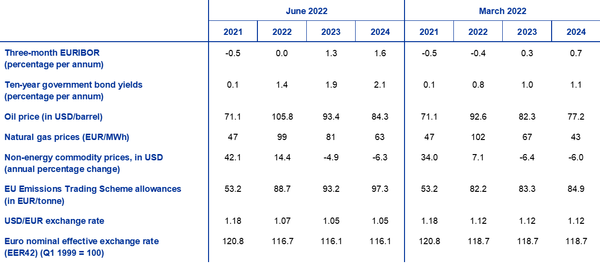
Housing investment growth is projected to slow in the short term before picking up gradually. Russia’s war in Ukraine has exacerbated labour and raw materials shortages, and financing conditions have deteriorated in the face of tighter credit standards and heightened uncertainty. Taken together, these factors are projected to slow housing investment growth considerably in the near term. Over the medium term, however, housing investment growth should gradually pick up, supported by strong demand, especially from higher income households, and fading supply constraints and uncertainty. Overall, housing investment growth is projected to remain subdued over the projection horizon, as financing conditions are projected to deteriorate further on the back of a normalisation of interest rates, offsetting the impacts of positive “Tobin’s Q”[6] effects and rising disposable income.
Business investment is expected to be dampened in the short term by the war in Ukraine, but is expected to recover once geopolitical tensions decline, supply bottlenecks ease and NGEU funds are disbursed. Increased uncertainty, the rise in energy prices, tighter financing conditions, intensified supply bottlenecks, lower business confidence and capacity utilisation, and the deterioration in the assessment of order books of capital goods producers, all point to a decline in business investment growth in 2022. As supply disruptions ease, and assuming that uncertainty gradually declines, investment is expected to return to a more dynamic growth path from 2023. Over the medium term, lending rates to non-financial corporations, though rising, are seen to remain relatively favourable compared with their historical average level in real terms. Furthermore, the positive impact of the NGEU programme; the projected profit growth in 2022 and beyond; and higher expenditures, related to the decarbonisation of the European economy and the reduction of its energy dependency on Russia, will all provide a boost to business investment.
Box 2
The international environment
The economic fallout resulting from the war in Ukraine and lockdowns in China represent key headwinds to global growth in the near term. The war, through its impact on commodity prices, supply chains and geopolitical uncertainty, reaches well beyond countries and regions closely integrated with Russia and Ukraine via trade and financial linkages. While it weighs on global growth, it adds to already heightened inflationary pressures. The resurgence of the COVID-19 pandemic and associated tightening of containment measures in Asia, particularly in China, is increasing the pressure on global supply chains. These headwinds operate in an environment of elevated inflationary pressures, which, among other factors, has prompted central banks across the globe to adjust their monetary policies, contributing to tighter financial conditions.
Global real GDP (excluding the euro area) is projected to grow by 3.0% in 2022, 3.4% in 2023 and 3.6% in 2024 – a weaker growth trajectory compared with the March 2022 projections. The relatively flat growth profile for the global economy over the later years of the projection horizon masks differences between advanced economies and emerging market economies. In advanced economies, growth is expected to decline in 2023 and stabilise thereafter against the backdrop of diminishing policy support and elevated – albeit gradually dissipating – inflationary pressures, as the recovery from the pandemic shock matures. The growth outlook for emerging market economies for this year has deteriorated amid weaker growth in China, but especially owing to a marked deterioration in the growth outlook for Russia and Ukraine. However, economic activity in emerging market economies is projected to gradually increase over the remainder of the projection horizon.
The Russian economy is expected to fall into a deep recession this year. This outlook reflects harsher economic sanctions enacted since the March 2022 projections, including an embargo on imports of energy commodities from Russia by the United Kingdom and the United States and a commitment by all G7 countries to phase out or ban Russian oil as soon as possible. The EU, following an earlier embargo on coal imports, has agreed a gradual ban on oil imports. The impact of the sanctions on activity in Russia is being amplified by broader private sector boycotts, which have disrupted production and logistics, while rising inflation and tight financing conditions are weighing on domestic demand. The projections foresee a deep recession, followed by only a subdued recovery, based on the assumption that the economic sanctions imposed to date will remain unchanged over the whole projection horizon.
The pandemic-related disruptions in Asia and the fallout from the war in Ukraine will weigh significantly on global trade in the near term. Notwithstanding a recent intensification of global supply chain disruptions, their impact is expected to gradually dissipate by the end of 2023, since the impact of both the war and the pandemic disruptions on global production chains is assumed to be temporary. As a result, world real imports (excluding the euro area) are projected to grow by 4.3% in 2022, 3.1% in 2023 and 3.7% in 2024. Compared with the March projections, the figures have been revised down for this year and next year, while remaining broadly unchanged for 2024. The projected growth of euro area foreign demand is more subdued and has been revised downwards more significantly compared with world imports, as European countries outside the euro area with tighter economic links to Russia and Ukraine are among those most affected by economic shocks triggered by the war. As this region also has close trade links with the euro area, euro area foreign demand is projected to decline over the near term and gradually recover thereafter.
Disruptions to global supply chains and commodity markets are expected to add to the already heightened inflationary pressures. Across OECD countries (excluding Turkey), annual headline consumer price index inflation accelerated to 7.1% in April, reaching its highest rate in more than three decades. Survey data for input and output prices in both the manufacturing and services sectors confirm the elevated inflationary pressures for producers and consumers. The general increase in global commodity prices observed this year is expected to exacerbate the already heightened inflationary pressures over the near term, especially in emerging market economies, where energy and food jointly account for a larger share of consumer expenditures compared with advanced economies. In key advanced economies, strong demand and rising wages amid tight labour markets are also important drivers of rising inflation.
The international environment
(annual percentage changes)
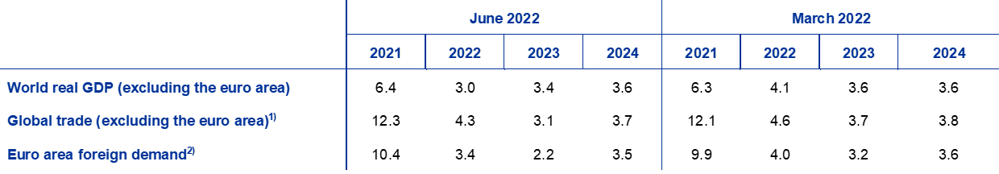
1) Calculated as a weighted average of imports.
2) Calculated as a weighted average of imports of euro area trading partners.
Repercussions of the war in Ukraine and intensified supply bottlenecks will weigh on the recovery of trade in the short term which, however, is expected to resume in 2023. Following signs of a recovery in euro area foreign demand at the end of 2021, the war in Ukraine and supply bottlenecks in China are denting near-term prospects for euro area exports. Some gains in price competitiveness, driven by the euro depreciation and the relative strength of the export prices of key trading partners, together with the expected recovery in services trade, are only partly offsetting the headwinds related to the war. Overall, annual growth in euro area export volumes has been revised down significantly for 2022 and 2023. On the import side, anaemic euro area activity expected in the near term has also led to lower projected growth rates for imports. Net exports are expected to contribute only moderately to GDP growth in 2022. Assuming that the effects of the conflict, supply constraints and pandemic-related restrictions in Asia start to unwind in the second half of 2022, euro area trade should start to converge towards its long-term growth path.
The labour market is expected to remain rather resilient to the fallout from the war. Employment is projected to grow by 1.9% in 2022, as the relaxation of COVID-19-related restrictions leads to a resurgence of activity in contact-intensive services, despite weaker labour demand in manufacturing on account of the adverse economic effects of the war in Ukraine. Employment growth is projected to stand at 0.5% in 2023 and 0.4% in 2024. The unemployment rate was lower than expected in the first quarter of 2022 and, following successive downward revisions over recent projection exercises, is now expected to stabilise at 6.8% in 2022-23 before declining to 6.7% in 2024.
Labour productivity growth is expected to decline in 2022, in line with the temporary slowdown in economic activity and rather resilient labour markets, before increasing again in 2023. The decline in the annual growth of labour productivity per person employed also reflects composition effects as growth in the services sector (which typically has lower productivity than the average for the economy as a whole) increased, while growth in the manufacturing sector (which typically has higher productivity) declined. Over the medium term, labour productivity growth is expected to regain momentum as a result of stronger economic growth and the positive effects of the digitalisation of the economy, and to average around 1.6% in 2023-24, which is considerably above its pre-pandemic long-term average of 0.6%.
Compared with the March 2022 projections, real GDP growth has been revised down by 0.9 percentage points for 2022 and by 0.7 percentage points for 2023, while it has been revised up by 0.5 percentage points for 2024. The downgraded outlook for 2022 largely reflects the adverse impact of the war in Ukraine on energy and food prices, confidence and trade. The downward revision to GDP growth in 2023 stems from the negative carry-over from 2022, while the upward revision for 2024 reflects a rebound in activity as headwinds fade.
Box 3
A downside scenario related to the economic impact of Russia’s military aggression in Ukraine
Given the uncertainty surrounding the economic outlook for the euro area on account of Russia’s war in Ukraine, this box presents a downside scenario with disruptions to energy supplies in the euro area, higher commodity prices, elevated uncertainty, weaker trade and a deterioration in financing conditions. The downside scenario features more negative shocks to economic activity relative to the baseline projections, and – in the short run – stronger upward pressures on inflation, while in the medium term inflation would be lower (Table A). This scenario is complemented by sensitivity analyses with respect to assumptions regarding the impact of energy shortages on production and with respect to energy price assumptions.
Table A
June 2022 baseline projections and downside scenario for the euro area
(annual percentage changes, unless otherwise indicated)
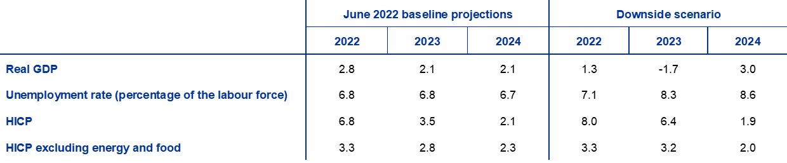
In the downside scenario, the intense phase of the war in Ukraine is assumed to be more protracted than expected in the baseline, extending into 2023. This will be associated with persistent geopolitical tensions and broader sanctions, which will cause euro area shocks to be larger and longer lasting. The scenario features a rise in uncertainty, which translates into a significant repricing of corporate bond spreads and equity markets and a deterioration in bank lending conditions, both domestically and globally.
The scenario assumes a complete cut in Russian energy exports to the euro area starting from the third quarter of 2022, leading to a rationing of gas supplies, significantly higher commodity prices, lower trade and intensified global value chain problems. Both oil and gas prices would be significantly higher than in the baseline. Given the low possibilities for a quick substitution of Russian gas supplies, European gas prices are assumed to double compared with the baseline by the fourth quarter of 2022. Oil prices are also higher than in the baseline – by 65% at the peak – although it is assumed that euro area countries would secure alternative oil supplies from the global market. While the energy market is expected to gradually rebalance in the medium term, prices would remain higher than in the baseline (with gas prices still standing almost 110% above the baseline in 2024 and oil prices almost 35% above the baseline). Rising energy costs and fertiliser prices, together with a cut in exports of grain from Russia and Ukraine, would also push up global food prices, reaching a peak at almost 30% above the levels envisaged in the baseline. The energy supply disruptions and the low possibilities for an immediate substitution of gas supplies from Russia would likely require some rationing and reallocation of resources, resulting in production cuts in the euro area, in particular in energy-intensive sectors. Global supply chain disruptions would become more acute in the short term, but fade by the end of 2023. Regarding the Russian economy, the scenario features a severe recession with a contraction in output similar to the contraction experienced when the Soviet Union collapsed.
World (excluding the euro area) activity and trade would be negatively affected via all channels considered, which would weigh heavily on euro area foreign demand. The latter would be lower in the downside scenario – by around 1.7% in 2022, around 5% in 2023 and around 6% in 2024 relative to the levels projected in the baseline.
The downside scenario would imply weaker (but still positive) average growth in 2022, a contraction in activity in 2023, followed by a strong, but incomplete, rebound in 2024. Compared with the baseline, euro area real GDP growth would be lower in the downside scenario by 1.5 percentage points in 2022 and by 3.8 percentage points in 2023, before rebounding in 2024 by 0.9 percentage points higher than in the baseline (Chart A). Annual average growth in 2022 is still positive mainly due to strong positive carry-over effects, but quarterly growth would be negative in the second half of 2022 and the beginning of 2023. One of the key drivers of the adverse GDP profile is the disruption to imported energy from Russia, which, given the low possibilities for immediate substitution of Russian gas and the expected increase in demand in the winter, would likely require some rationing, resulting in production cuts, in particular in energy-intensive sectors. While the recession is seen to be followed by a strong rebound, as the impact of supply disruptions eases on account of a gradual substitution of energy inputs and economic adjustment, the level of GDP in the downside scenario remains below the baseline at the end of the horizon. The lower level of activity leads to a persistent increase in the unemployment rate (Table A).
With respect to inflation, large commodity price increases imply strong upward price pressures, prolonging the expected period of elevated inflation. The impact of higher prices for energy and food commodities, as well as the energy-related production cuts, would result in considerably higher headline inflation than in the baseline in 2022 and especially in 2023 (Chart A). Lagged indirect effects of higher energy and food prices are also expected to sustain HICP inflation excluding energy and food at higher levels for longer, which would more than offset the downward pressures from weaker demand and higher unemployment. Nevertheless, a declining profile of energy prices, together with the downward demand pressures, would dominate in 2024, with rates for both HICP inflation and HICP inflation excluding energy and food falling below the baseline.
Chart A
Impact on real GDP growth and HICP inflation in the euro area in the downside scenario compared with the June 2022 baseline projections
(deviations from the June 2022 baseline projections, in percentage points)
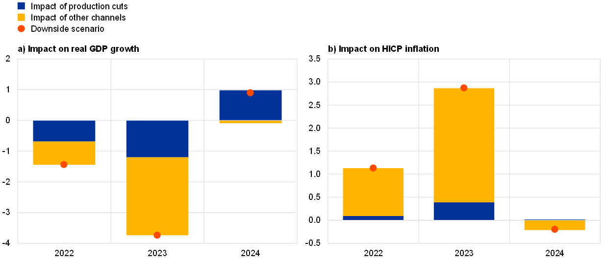
Considerable uncertainty surrounds the estimates of the size of production cuts owing to shortages of energy supplies. In particular, this relates to the degree of substitution between imported energy and domestic energy resources. To illustrate this uncertainty, a satellite model is combined with the ECB-BASE model to gauge the effects of a +/- 0.01 change in this elasticity of substitution.[7] Compared with the downside scenario, the trough (peak) effect for real GDP growth would be -1.1 percentage points (+0.6 percentage points) in 2023 when the possibility of substitution is lower (higher), while the respective peak (trough) inflation effect in 2024 would be around 0.2 percentage points (-0.1 percentage points). The impacts on the level of GDP are seen to stabilise in 2024 (Chart B).
Chart B
Sensitivity analysis on production cuts related to energy shortages: real GDP growth and HICP inflation
(deviations from the June 2022 downside scenario, in percentage points)
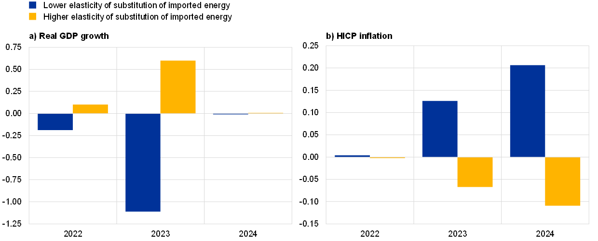
Another sensitivity analysis considers the uncertainty related to the energy price paths in the downside scenario. In an exercise that assumes lower gas supply substitution in the medium term and a stronger oil price reaction once Russian energy exports are severely disrupted, both oil and gas prices are assumed to be around 45% higher in 2024 than in the downside scenario (Chart C). The macroeconomic effects of this counterfactual energy price path are evaluated with a range of models regularly employed in ECB and Eurosystem staff projections. On average, the results point to real GDP growth that is 0.1 percentage points (0.2 percentage points) lower in 2023 (2024), and HICP inflation that is 0.5 percentage points (0.8 percentage points) higher respectively, relative to the downside scenario (Table B).
Chart C
Sensitivity analysis on commodity prices: alternative paths for oil and gas prices
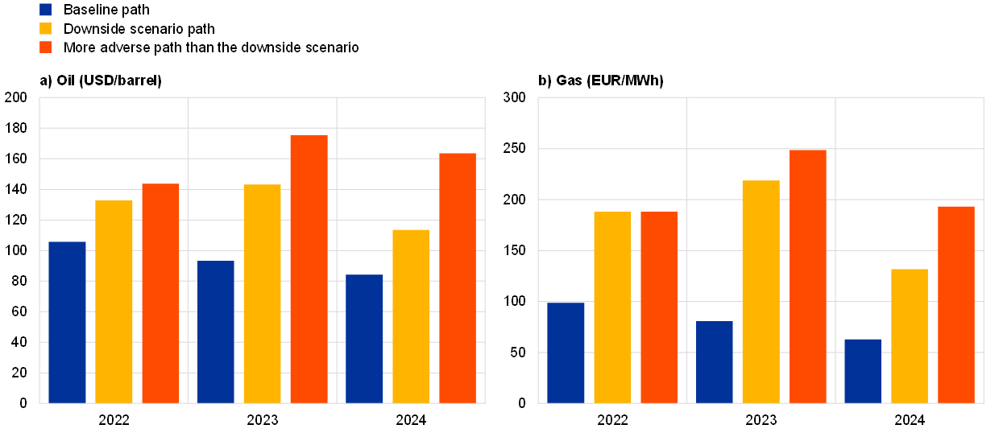
Table B
Sensitivity analysis on commodity prices: macroeconomic impacts of higher energy price paths
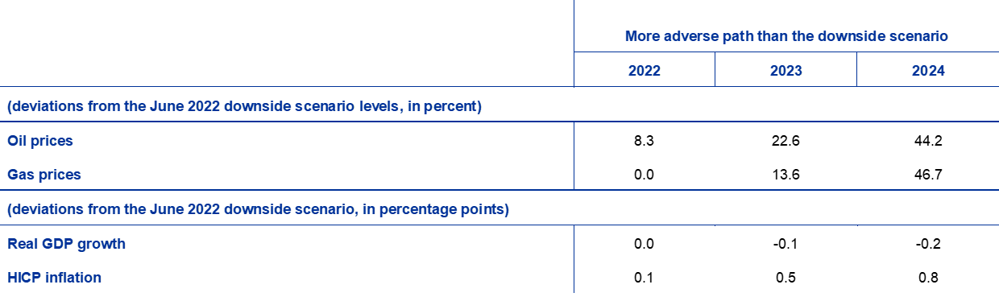
Note: The results are averages based on a range of models regularly employed by staff in the projections.
The downside scenario does not consider a number of factors that may also influence the magnitude and persistence of the impacts. In particular, the scenario has been prepared using the same fiscal and monetary policy assumptions that underlie the June 2022 baseline projections. If the events of the scenario materialise, governments may take additional action to cushion the impact of the stronger energy price hikes on consumers and firms and monetary policy may react. In addition, the estimated impact of gas supply disruptions on production is highly uncertain, depending inter alia on the potential for substitution (e.g. with gas from other countries), prioritisation and reallocation of resources and demand, seasonality and storage dynamics. In the case of a greater degree of substitution and swifter economic adjustment, the economic effects could be milder than illustrated in the scenario. On the other hand, an even more protracted and intense conflict entails the risk of a more pronounced and persistent impact. In addition, besides the higher energy and food price assumptions included in the scenario, other commodity prices, such as metal and other raw material prices, might also be severely affected by the conflict, given the role of Russia and Ukraine in global supplies of these commodities.
2 Fiscal outlook
Substantial further fiscal stimulus measures have been incorporated into the baseline compared with the March 2022 projections. This mainly reflects governments’ further reaction to soaring energy prices since Russia’s invasion of Ukraine and other war-related spending, which is overall assessed at close to 1% of euro area GDP in 2022.[8] About one-third of this fiscal stimulus – particularly the spending on increased defence capabilities and refugee support – is projected to continue having a budget impact in 2023 and 2024. These additional measures in 2022 and their partial reversal in 2023 broadly explain the revisions to the fiscal stance compared with the March 2022 projections (Table 1). Apart from this, other discretionary fiscal policy effects will affect the fiscal stance, particularly over 2023-24. These stem from government investment and fiscal transfers, as well as further reductions in direct taxes and social security contributions. On government investment, in addition to higher military spending, the baseline assumes higher NGEU funding compared with the March projections, in part reflecting a postponement from 2021. The higher fiscal transfers refer mainly to further upward revisions to the growth rate of public pensions, which are mostly indexed to inflation or economy-wide wages. Overall, after the strong expansion in 2020, the euro area fiscal stance adjusted for NGEU grants is estimated to have tightened in 2021 on account of non-discretionary revenue factors[9] and is projected to continue to tighten somewhat, especially in 2023, mainly reflecting the reversal of the COVID-19 crisis support and the downsizing of the energy price and war support.
The euro area budget balance is projected to improve steadily in the period to 2024, but by significantly less than foreseen in the March 2022 projections. Over the projection horizon, the improvement in the budget balance is seen to be driven primarily by the cyclical component, followed by the lower cyclically adjusted primary deficit. At the end of the horizon, the budget balance is projected to be -2.4% of GDP and thus to remain well below the pre-crisis level (-0.7%). After the sharp increase in 2020, euro area aggregate government debt is expected to decline over the entire projection horizon, reaching close to 90% of GDP in 2024, which is still above its pre-pandemic level (84%). This decline is mainly due to favourable interest rate-growth differentials on account of the nominal GDP growth, which more than offset the persisting, albeit decreasing, primary deficits. Compared with the March 2022 projections, despite a better outcome for 2021, the budget balance path has been revised significantly downwards. This reflects a deterioration in the cyclical component, the additional stimulus measures incorporated into the baseline and higher interest payments, particularly in high-debt countries. These factors have also induced an upward revision to the path of the euro area aggregate debt ratio over the entire projection horizon.
3 Prices and costs
Headline inflation is set to remain elevated over the coming quarters (Chart 3). After surging over recent months, driven by contributions from all main components, headline inflation is expected to decline slightly over the coming quarters – although still remaining very high.[10] Energy remains the main driver of inflation, with all main subcomponents (fuels, electricity and gas) recording high price dynamics over the course of the year and in early 2023. This reflects, inter alia, persistently high wholesale gas prices and oil prices, and particularly elevated oil refining margins from a historical perspective, following heightened concerns about supplies owing to Russia’s invasion of Ukraine and global shortages of refining capacity. The impact of these factors on energy inflation in 2022 is tempered only slightly by fiscal measures that reduce the prices for energy paid by households. In the absence of new shocks to energy commodity prices, energy inflation is projected to start receding notably towards the end of 2022 owing to negative base effects and assumptions of a downward-sloping oil price futures curve. Following strong recent increases, food inflation is expected to rise further over the summer, before gradually declining towards the end of the year. The main factors behind high food inflation are the delayed effects of the energy shocks along the different stages of the food production chain (including their impact on fertiliser prices), and higher food commodity prices (inter alia related to supply disruptions from the war in Ukraine), as well as the impact of wage increases (for example the rise in minimum wages in several euro area countries has a relatively stronger impact in the food sector than in other sectors). HICP inflation excluding energy and food is also expected to remain at high levels for most of 2022. The sustained inflation rates reflect the effects of supply bottlenecks, which are expected to strengthen (as a result of the war in Ukraine and the COVID-19-related lockdowns in China), as well as strong demand for contact-intensive services following the relaxation of COVID-19 restrictions in the euro area, and indirect effects of the surge in energy and food prices.
Chart 3
Euro area HICP
(annual percentage changes)
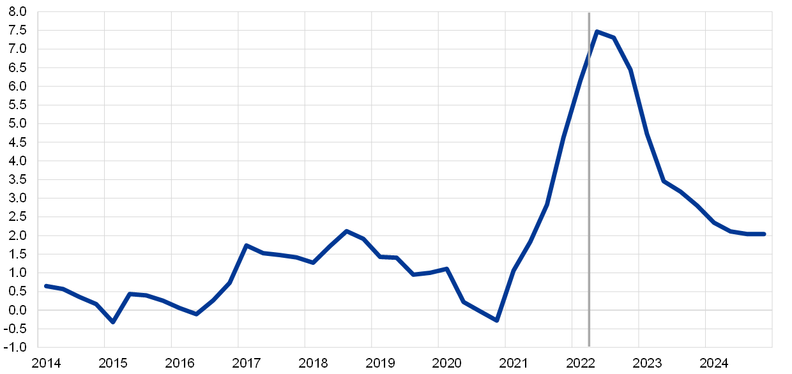
Note: The vertical line indicates the start of the projection horizon.
Inflation is projected to decrease to 3.5% in 2023 and 2.1% in 2024. HICP inflation is expected to start declining towards the end of 2022, mainly owing to downward base effects in the energy component and the assumed decline in the price of oil in line with futures prices. The ongoing normalisation of monetary policy, to the extent that it is reflected in higher interest rate assumptions, will also exert a moderating impact on inflation, with the usual transmission lags. Towards the end of the projection horizon the contribution of energy inflation is expected to be negligible, as the negative impact from the downward-sloping oil and gas price futures curve is somewhat offset by lagged effects from past wholesale gas prices and electricity price increases, as well as by climate change-related measures in some countries. Food inflation is also expected to start moderating in 2023, as the upward pressures from energy input costs, fertiliser prices and prices for food commodities subside. Some of the downward impacts from easing input costs are, however, seen to be offset by lagged impacts of the rise in wage input costs and costs related to the transition of the food industry towards greener production. After peaking in 2022, HICP inflation excluding energy and food is expected to decline over the projection horizon, as the upward impacts from supply bottlenecks and the reopening of the economy unwind. It is, however, expected to remain above its long-term average until the end of the horizon, standing at 2.3% in 2024. The projection for HICP inflation excluding energy and food assumes continued upward pressure from indirect effects of high energy and food prices, which should however diminish over the projection horizon. By contrast, wages are expected to support underlying inflation throughout the projection horizon. Following robust increases in 2021, profit margins are expected to buffer the higher wage costs in the near term to some extent, but thereafter margins are projected to recoup some losses in 2024. Longer-term inflation expectations are expected to remain anchored at the ECB’s inflation target of 2%. The baseline projections are surrounded by significant uncertainty on account of the war in Ukraine and an alternative downside scenario is presented in Box 3.
Compensation per employee is projected to grow by 4.2% in 2022 and 4.3% in 2023 before declining to 3.7% in 2024. These rates are well above the historical average since 1999 (2.2%) and also above the average rates observed before the great financial crisis (2.6%). Wage growth is expected to be supported by tight labour markets, increases in minimum wages and some effects of compensation for the high rates of inflation. Box 4 provides a sensitivity analysis regarding the macroeconomic effects of a potential increase in the degree of wage indexation. While unit labour cost growth is projected to be strong in the short term, looking through the distortions owing to the job retention schemes which affect growth rates over the period 2020-22, growth in unit labour costs is expected to decrease over the projection horizon. This decline is initially due to the expected recovery in productivity per person employed starting towards the end of 2022, and subsequently also due to the projected moderation in wage growth in 2024.
Import price pressures are expected to be significantly stronger than domestic price pressures in 2022 but to drop sharply in the later years of the projection horizon. Import price inflation is expected to be high in 2022, largely reflecting increases in oil and non-energy commodity prices, as well as some increases in the prices of imported inputs related to supply shortages. Terms of trade losses in 2022 are significant but are seen to be somewhat contained by the ability of euro area exporters to also raise prices. As import prices drop in 2023 and 2024, the terms of trade are projected to slightly improve.
Compared with the March 2022 projections, the outlook for HICP inflation has been revised up by 1.7 percentage points for 2022, 1.4 percentage points for 2023 and 0.2 percentage points for 2024. The revisions are due to all main components, with revisions to food and energy contributing more to the short-term revisions, while for 2024 the revision is almost entirely due to HICP inflation excluding energy and food. These changes compared with the previous projections reflect recent upward data surprises; stronger and more persistent upward pressures from energy prices (oil and gas); input cost increases for the food sector, related to higher energy prices and increased food commodities price assumptions; more persistent supply disruptions; stronger wage growth; and the depreciation of the euro effective exchange rate. The aforementioned factors by far outweigh the disinflationary impact of the weaker growth outlook related to the conflict in Ukraine and higher interest rate assumptions.
Box 4
Sensitivity analysis: impact of a higher degree of wage indexation
The surge in inflation has increased the risk of second-round effects on inflation via higher wage demands. The recent surge in inflation to rates, unprecedented in the history of the euro area, is a factor that may have an important bearing on the outlook for wages, which is the first step in potential second-round feedback loops to prices. This box evaluates the macroeconomic consequences of a possible change in the relationship between wages and prices owing to elevated inflation.[11]
Model-based analysis shows that temporary wage pressures stemming from a higher degree of indexation of wages to inflation can have notable effects on inflation dynamics. The ECB-BASE model is used to assess the sensitivity of the outlook for inflation and wages stemming from a higher degree of wage indexation.[12] In the model, price and wage inflation are modelled with Phillips curves, featuring an indexation component, as well as expectational and marginal cost-based factors. Starting from the baseline of the June 2022 Eurosystem staff macroeconomic projections, the counterfactual simulation assumes higher indexation of wages to past price dynamics.[13] The higher degree of indexation implies a stronger reaction of wages to past price increases, leading to higher inflation over the projection horizon. Annual wage inflation is on average 0.5 percentage points above the baseline of the June 2022 projections (Chart A, blue bars). Higher wage demands spill over to further increases in price inflation, which exceeds the baseline by 0.1 percentage point in 2023 and by 0.2 percentage points in 2024.
Chart A
Macroeconomic effects of a higher degree of wage indexation
(deviation from baseline in percentage points)
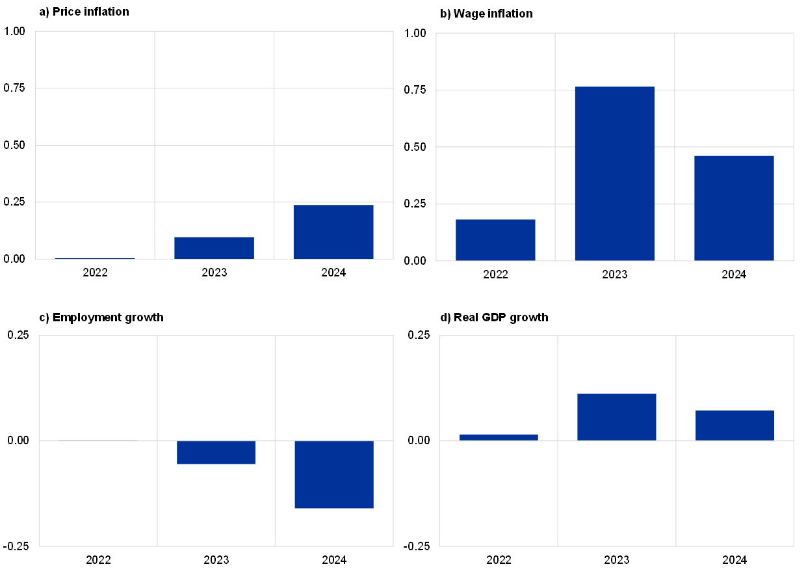
Sources: ECB staff calculations based on simulations with the ECB-BASE model.
The simulation implies lower employment and points to a significant trade-off between increasing real wage compensation and preserving jobs. Higher real labour costs weigh on labour demand, with employment falling below the baseline by 0.2% in 2024.[14] However, labour demand in the ECB-BASE model is sluggish. Over the projection horizon, household real income thus increases, as the fall in employment does not outweigh the increase in real wages. Initially, the increase in real wages supports consumption and economic activity, with real GDP growth exceeding the baseline by around 0.1 percentage points in both 2023 and 2024. The positive effect on real GDP starts fading from the second half of 2024, as the drag on employment starts to dominate the increase in real income per head. Despite the short-term increase in real GDP, there is therefore a clear deterioration in employment prospects in the case of higher wage indexation. These model-based simulations do not consider additional channels which would lead to a more immediate deterioration of economic activity, notably due to higher uncertainty regarding labour market prospects as well as front-loading of the adjustment by households and firms to expected adverse labour conditions.[15]
Box 5
Sensitivity analysis: alternative energy price paths
Given the significant uncertainty surrounding future energy price developments, this sensitivity analysis assesses the mechanical implications for the baseline projections of alternative energy price paths. Alternative downside and upside paths are derived from the 25th and 75th percentiles of the option-implied neutral densities for the oil price on 17 May 2022 (the cut-off date for the technical assumptions for the June 2022 projections). The baseline assumptions for the oil price lie broadly in the middle of the interquartile range, suggesting that there is no significant bias as regards the risks in either direction. In the absence of similar distributions for gas prices, they are derived from the 25th and 75th percentiles from a distribution based on recent forecast errors of futures prices for wholesale gas.[16] A third path assumes that both oil and gas prices remain constant at their respective levels prevailing in the two weeks prior to 17 May 2022.
The impacts of these alternative paths are assessed with a range of Eurosystem and ECB staff macroeconomic models used in the projections.[17] The average impacts on output growth and inflation across these models are shown in the table below. The results suggest that the highest upward deviations from the baseline HICP inflation projections are obtained for the 75th percentiles for the later years of the horizon and for the constant oil and gas prices for 2024. HICP inflation remains above 2% throughout the projection horizon for the constant price assumptions and for the 75th percentile path. By contrast, in the scenario based on the 25th percentile of option-implied densities, HICP inflation declines to 1.4% in 2024. Impacts on real GDP growth are -0.1 percentage points in 2023 and 2024 for the constant price assumption and 75th percentile, while the 25th percentile path would imply 0.2 percentage points of higher growth.
Impacts of alternative energy price paths
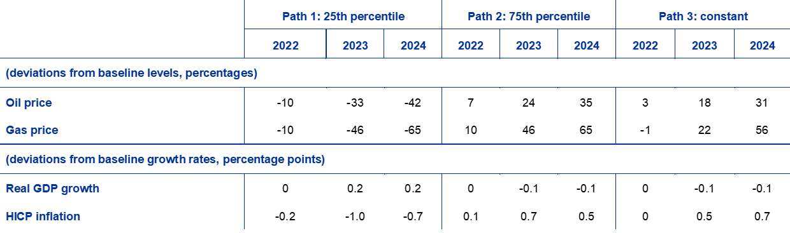
Notes: The 25th and 75th percentiles refer to the option-implied neutral densities for the oil price as at 17 May 2022. The constant oil and gas prices take the respective value as at the same date. The macroeconomic impacts are reported as averages of a number of ECB and Eurosystem staff macroeconomic models.
Box 6
Forecasts by other institutions
Forecasts for the euro area are available from both international organisations and private sector institutions. However, these forecasts are not directly comparable with one another or with the Eurosystem staff macroeconomic projections, as these were finalised at different points in time. Additionally, these projections use different methods to derive assumptions for fiscal, financial and external variables, including oil and other commodity prices. Finally, there are differences in working day adjustment methods across different forecasts.
Comparison of recent forecasts for euro area real GDP growth and HICP inflation
(annual percentage changes)
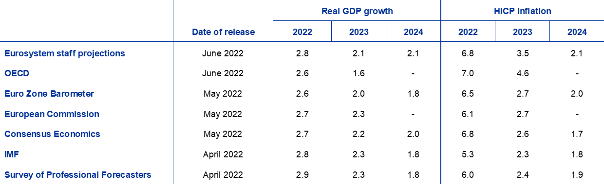
Sources: OECD June 2022 Economic Outlook 111, 8 June 2022; MJEconomics for the Euro Zone Barometer, 26 May 2022 (data for 2024 are taken from the April 2022 survey); European Commission Spring 2022 Economic Forecast, 16 May 2022; Consensus Economics Forecasts, 12 May 2022 (data for 2024 are taken from the April 2022 survey); IMF World Economic Outlook, 19 April 2022; and the ECB Survey of Professional Forecasters, for the second quarter of 2022, 15 April 2022.
Notes: The Eurosystem staff macroeconomic projections report working day-adjusted annual growth rates, whereas the European Commission and the IMF report annual growth rates that are not adjusted for the number of working days per annum. Other forecasts do not specify whether they report working day-adjusted or non-working day-adjusted data. Historical data may differ from the latest Eurostat publications due to data releases after the cut-off date for the projections.
The June 2022 Eurosystem staff projections are broadly in line with other forecasts for GDP growth, while for inflation they are above most others, particularly for 2023. The Eurosystem staff projections for growth are broadly in line with other forecasts, except for 2024, where the staff projection is slightly higher. As regards inflation, the Eurosystem staff projection is higher than most other forecasts, significantly so in 2023, likely owing to the more recent cut-off date and more up-to-date technical assumptions, which could suggest a stronger persistence of price pressures and hence resulting inflation. The OECD’s forecast for 2023 is significantly above the Eurosystem staff projections and those of other forecasters. This is largely explained by the OECD’s assumption on oil prices, which foresees a significant increase in early 2023, while the Eurosystem staff projections assume that oil prices will follow futures prices which implies a declining path (see Box 1).
© European Central Bank, 2022
Postal address 60640 Frankfurt am Main, Germany
Telephone +49 69 1344 0
Website www.ecb.europa.eu
All rights reserved. Reproduction for educational and non-commercial purposes is permitted provided that the source is acknowledged.
For specific terminology please refer to the ECB glossary (available in English only).
PDF ISSN 2529-4687, QB-CF-22-001-EN-N
HTML ISSN 2529-4687, QB-CF-22-001-EN-Q
The cut-off date for technical assumptions, such as those for oil prices and exchange rates, was 17 May 2022. The macroeconomic projections for the euro area were finalised on 24 May 2022. The current projection exercise covers the period 2022-24. Projections over such a long horizon are subject to very high uncertainty, and this should be borne in mind when interpreting them. See the article entitled “An assessment of Eurosystem staff macroeconomic projections” in the May 2013 issue of the ECB’s Monthly Bulletin. See http://www.ecb.europa.eu/pub/projections/html/index.en.html for an accessible version of the data underlying selected tables and charts. A full database of past ECB and Eurosystem staff macroeconomic projections is available at https://sdw.ecb.europa.eu/browseSelection.do?node=5275746.
According to Eurostat’s flash estimate, which was published after the projections were finalised, headline HICP inflation was 8.1% in May 2022 – somewhat higher than anticipated by the Eurosystem staff projections. A mechanical update of the projections would suggest an inflation rate of 7.1% in 2022.
This estimate of GDP growth was published on 8 June 2022, after the finalisation of the staff projections which were based on the flash estimate (0.3%). The revision is assessed by ECB staff to have limited implications for the projections for the euro area.
The assumption for euro area ten-year nominal government bond yields is based on the weighted average of countries’ ten-year benchmark bond yields, weighted by annual GDP figures and extended by the forward path derived from the ECB’s euro area all-bonds ten-year par yield, with the initial discrepancy between the two series kept constant over the projection horizon. The spreads between country-specific government bond yields and the corresponding euro area average are assumed to be constant over the projection horizon.
Natural gas price assumptions are based on Dutch TTF gas futures prices. The Eurosystem staff projections are also guided by technical assumptions for wholesale electricity prices based on futures prices in the largest euro area countries.
Tobin’s Q is the value of an existing house divided by its construction cost.
The elasticity of substitution for the production cuts in the downside scenario is obtained by using the CES production function approach in Bachmann, R., Baqaee, D., Bayer, C., Kuhn, M., Löschel, A., Moll, B., Peichl, A., Pittel, K. and Schularick, M. (2022), “What If? The Economic Effects for Germany of a Stop of Energy Imports from Russia”, ECONtribute Policy Brief, no 28/2022, as extended in Borin, A., Conteduca, P. O., Di Stefano, E., Mancini, M., Gunnella, V. and Panon, L. (2022, forthcoming). Such elasticity relates to the possibility to substitute imported energy with domestic energy resources or, more generally, the degree to which agents are willing to reallocate their expenditure from imported energy to other products. At the euro area level, the elasticity is assumed to be around 0.04. To gauge the sensitivity of real GDP path and the corresponding inflation response to different levels of substitutability, the elasticity has been changed by +/- 0.01, and the impact of this change on the macroeconomic variables was derived using the ECB-BASE model assuming the same ratio of demand and supply shocks as the one underlying the downside scenario. For the ECB-BASE model see Angelini, E., Bokan, N., Christoffel, K., Ciccarelli, M. and Zimic, S., “Introducing ECB-BASE: The blueprint of the new ECB semi-structural model for the euro area”, Working Paper Series, No 2315, ECB, 2019.
These new measures are estimated to have a 0.4 percentage point impact on growth and a -0.4 percentage point impact on inflation in 2022. In 2023, on account of the timing and composition of the measures, the impact on growth is estimated to fade out, while the impact on inflation is seen to be broadly reversed.
Mainly stemming from revenues growing faster than their macroeconomic tax bases and other revenue windfalls. These factors are projected to start reversing from 2022, though only partly and less than foreseen in the March projections.
According to Eurostat’s flash estimate, which was published after the projections were finalised, headline HICP inflation was 8.1% in May 2022 – somewhat higher than anticipated by the Eurosystem staff projections. A mechanical update of the projections would suggest an inflation rate of 7.1% in 2022.
According to recent ECB analysis, there is a low prevalence of formal wage indexation schemes in the euro area. See “The prevalence of private sector wage indexation in the euro area and its potential role for the impact of inflation on wages”, Economic Bulletin, Issue 7, ECB, 2021
For more information on the ECB-BASE model, see footnote 7.
This is simulated by a 25% increase in the parameter capturing wage indexation in the wage Philips curve of the ECB-BASE model which increases from 0.39 (estimated value based on historical data) to 0.5.
The effect on labour force is negligible implying unemployment rate increases approximately one-to-one with a decrease of employment.
The simulation is performed assuming backward looking expectations and therefore agents do not foresee worsening of job prospects in the future.
The past forecast errors for gas price futures were calculated over the period from January 2017 to February 2022.
As the macroeconomic models used in this analysis often have only equations for oil prices (in part owing to the historical co-movement between oil and gas prices), the alternative paths for oil and gas are combined into a synthetic index. The synthetic index is a weighted average of oil and gas price developments based on euro area import weights reported by HWWI (roughly 80% for oil and 20% for gas). The impact of the synthetic index is then assessed using the elasticity for oil prices. This is an approximation which adds additional uncertainty to the results.
-
9 June 2022
-
23 June 2022